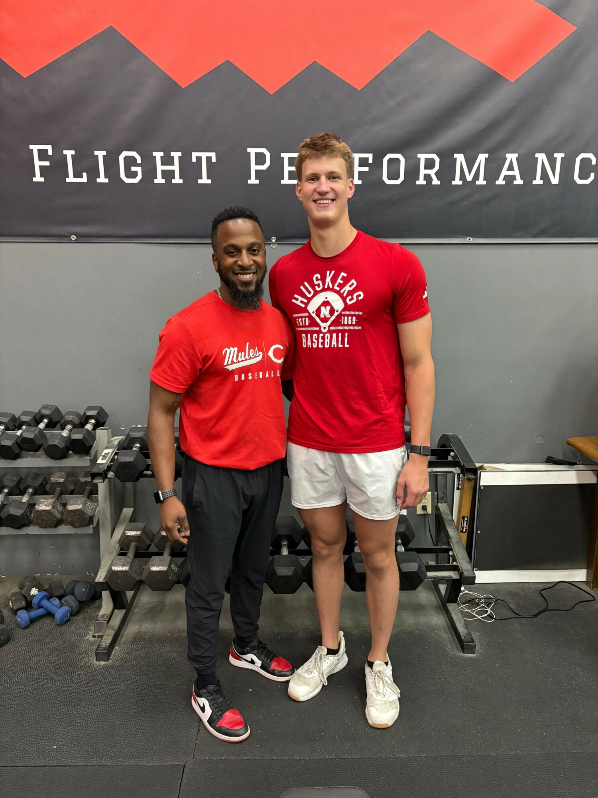
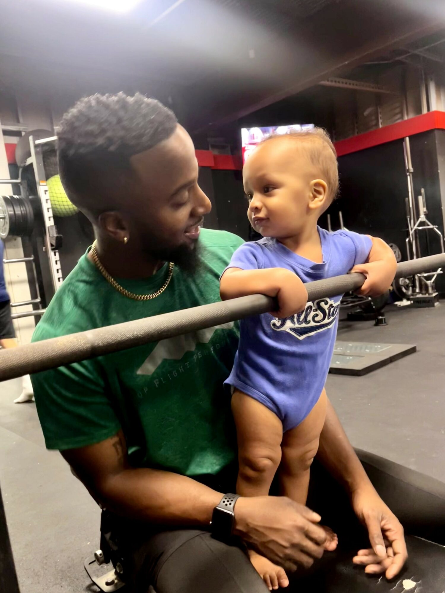

The Playbook
Today we'd like to introduce you to Trevor Jones — the founder behind Top Flight Performance. We sat down with Trevor to hear the story behind TFP: how it started, the challenges along the way, and what drives the work he does with athletes today.
I grew up playing sports and always knew I wanted to train athletes at some point in my life. I earned a baseball scholarship to play at the University of Central Missouri, with the goal of entering the MLB Draft and starting my professional career. But God had other plans for me.
After a brief stint in pro ball with the Wichita Wingnuts, I was released and decided it was time to start developing my career outside of baseball. In 2017, I moved from St. Louis to Kansas City — partly to be closer to teammates and friends, and mostly because I was chasing my now wife.
I worked at KU Med as a rehab technician for about a year, but quickly realized that wasn't the path I wanted to stay on. So I went back to school to earn my master's degree from Concordia University Chicago and my CSCS certification. In 2018, I left KU Med and started giving hitting lessons and training athletes on the side. That's when Top Flight Performance was born.
Originally just a side gig I started in 2019, I thought it would come to an end when COVID hit in 2020 and everything slowed down. Once things reopened, the strength and conditioning business I was working for closed its doors — so I stepped in to take over. I began running the strength and conditioning side of the facility full-time.
Since then, I've had the opportunity to train athletes ranging from elementary school all the way up to the professional level. While most of the athletes I work with are baseball and softball players, all athletes are welcome at Top Flight Performance.

This has definitely not been a smooth road. Starting a business during COVID was an experience in itself. We had to make sure athletes kept their masks on, stayed six feet apart, and that all the equipment was cleaned and sanitized every day. Balancing all of that while trying to grow a new business was exhausting at times.
I had no prior business experience before starting Top Flight, so I had to learn everything on the fly — and honestly, I'm still learning every day. Not being from Kansas City also came with its own set of challenges, especially since I didn't have many connections in the KC sports world when I first started.
Top Flight Performance is a baseball-focused strength and conditioning company committed to helping athletes reach their full potential on and off the field. We specialize in developing strength, speed, and power for baseball and softball players — but we work with athletes of all sports and levels, from youth to professional.
What sets us apart is our individualized approach. Every athlete starts with an assessment so we can build a program tailored to their specific needs. We don't believe in cookie-cutter workouts. Everything is designed around helping that athlete move better, perform better, and stay healthy throughout their season.
We're known for creating a training environment where every athlete — whether they're a first-round draft pick or just getting started — gets treated with the same level of care and attention. We focus on long-term athletic development and building relationships that go beyond just training sessions.
Brand-wise, I'm most proud of the trust and community we've built. Athletes come to Top Flight not just to get stronger, but to be part of something that pushes them to grow as athletes and as people. Our mission is simple: to become the best strength and conditioning company for hitters in the Kansas City area while continuing to evolve and give our athletes every advantage possible.
I love to fish and cook in my downtime. I started fishing at a young age with my grandma, and it's something that's always stuck with me. My love for cooking came from watching my grandma and mom prepare meals for our family — and honestly, YouTube has helped me level up quite a bit too. One of my favorite things to make is hibachi on my Blackstone grill.

Want to train with Trevor and the TFP team? Book your evaluation and come see what structured development looks like.